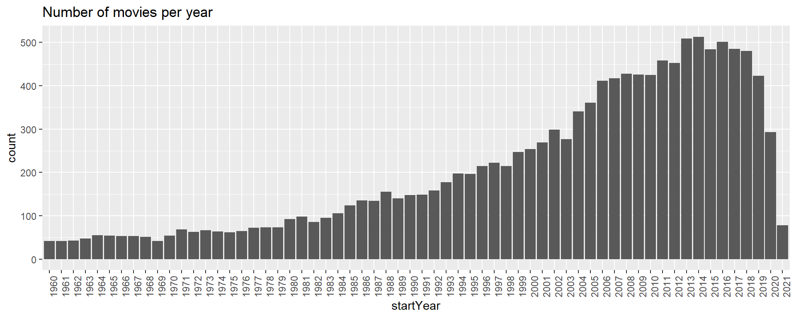

Reticulate
RaukR 2025 • R Beyond the Basics
Nina Norgren
08-May-2025
Learning outcomes
In this session we will learn to:
- Understand the concepts needed for running Python in R
- Understand the different object classes in Python and their equivalent in R
- Apply our knowledge to:
- Import Python functions into R
- Use R objects as input to Python functions
- Translate between Python and R objects
Introduction
R versus Python The ultimate fight!
Not anymore!
Introducing reticulate
- Combine Python and R code
- Use R classes in Python functions and vice versa
- Import Python functions into R code and run from R
- Add Python code chunks to markdown documents
Importing Python modules
Objects are automatically converted to R types, unless otherwise specified
Importing Python modules
Importing built-in Python functions
Access Python’s built-in functions directly in R
num [1:8] 1 5 3 4 2 2 3 2r_vec is an R object.
Importing built-in Python functions
Python built-in functions still working on R objects
Sourcing scripts
Import your own python functions for use in R. File python_functions.py:
Sourcing scripts
Import your own python functions for use in R.
R code:
Sourcing scripts
Import your own python functions for use in R.
R code:
Type numeric in and type numeric out. But what happens in between?
Sourcing scripts
But what happens in between?
File python_functions.py:
Execute Python code
Run python string:
All objects created by python are accessible using the py object exported by reticulate
Execute Python code
Run python script my_python_script.py:
Python in R Markdown
In R Markdown, it is possible to mix in Python chunks:
<class 'pandas.core.frame.DataFrame'>Python in R Markdown
Access the movie object using the py object, which will convert movies to an R object:
Python in R Markdown
Access the movie object using the py object, which will convert movies to an R object:
movies_r <- py$movies
movies_r <- as_tibble(movies_r)
subset <- movies_r %>% select(5:6, 8:10)
knitr::kable(subset[1:7,],'html')| originalTitle | startYear | runtimeMinutes | genres | averageRating |
|---|---|---|---|---|
| Kate & Leopold | 2001 | 118 | Comedy,Fantasy,Romance | 6.4 |
| The Brain That Wouldn't Die | 1962 | 82 | Horror,Sci-Fi | 4.4 |
| The Fugitive Kind | 1960 | 119 | Drama,Romance | 7.1 |
| Les yeux sans visage | 1960 | 90 | Drama,Horror | 7.7 |
| À bout de souffle | 1960 | 90 | Crime,Drama | 7.8 |
| 13 Ghosts | 1960 | 85 | Horror,Mystery | 6.1 |
| The Alamo | 1960 | 162 | Adventure,Drama,History | 6.8 |
Python in R Markdown
Continue working with the now converted R object in R
Python in R Markdown
Continue working with the now converted R object in R
Type conversions
When calling python code from R, R data types are converted to Python types, and vice versa, when values are returned from Python to R they are converted back to R types.
Conversion table
| R | Python | Examples |
|---|---|---|
| Single-element vector | Scalar | 1 , 1L , TRUE, foo |
| Multi-element vector | List | c(1.0, 2.0, 3.0), c(1L, 2L, 3L) |
| List of multiple types | Tuple | list(1L, TRUE, "foo") |
| Named list | Dict | list(a = 1L, b = 2.0), dict(x = x_data) |
| Matrix/Array | NumPy ndarray | matrix(c(1,2,3,4), nrow=2, ncol=2) |
| Data Frame | Pandas DataFrame | data.frame(x = c(1,2,3), y = c("a","b","c")) |
| Function | Python function | function(x) x +1 |
| Raw | Python bytearray | as.raw(c(1:10)) |
| NULL, TRUE, FALSE | None, True, False | NULL, TRUE, FALSE |
Type conversions
python_functions.py:
Type conversions
Type conversions
source_python("python_functions.py", convert=FALSE)
r_var <- matrix(c(1,2,3,4),nrow=2, ncol=2)
class(r_var)
r_var2 <- check_python_type(r_var)
class(r_var2)
r_var3 <- py_to_r(r_var2)
class(r_var3)[1] "matrix" "array"
<class 'numpy.ndarray'>
[1] "numpy.ndarray" "python.builtin.object"
[1] "matrix" "array" Type conversions
42in R is a floating point number. In Python it is an integer
Examples in bioinformatics
Random forest classifier
# Import scikit-learn's random forest classifier
sklearn <- import("sklearn.ensemble")
RandomForestClassifier <- sklearn$RandomForestClassifier
# Create a random forest classifier
clf <- RandomForestClassifier(n_estimators=100L)
# Training data (example)
X_train <- matrix(runif(1000), ncol=10)
y_train <- sample(c(0, 1), 100, replace=TRUE)
# Train the model
clf$fit(X_train, y_train)
# Predict on new data
X_test <- matrix(runif(200), ncol=10)
predictions <- clf$predict(X_test)
predictionsRandomForestClassifier()
[1] 1 1 1 1 1 0 1 1 1 0 1 1 1 1 0 0 0 1 1 0Examples in bioinformatics
ENSEMBL API
# Load the ensembl_rest library
ensembl_rest <- import("ensembl_rest")
# Fetch gene information for a given gene ID
gene_info <- ensembl_rest$symbol_lookup(species='homo sapiens', symbol='BRCA2')
# Print gene information
gene_info$description[1] "BRCA2 DNA repair associated [Source:HGNC Symbol;Acc:HGNC:1101]"Examples in bioinformatics
Biopython sequence analysis
# Import Biopython's SeqIO module
SeqIO <- import("Bio.SeqIO")
# Parse a FASTA file
records <- SeqIO$parse("example.fasta", "fasta")
# Translate each sequence to a protein
translated_proteins <- list()
for (record in reticulate::iterate(records)) {
translated_proteins[[record$id]] <- record$seq$translate()
}
translated_proteins$GeneA
Seq('MAIVMGR*KGAR*')
$GeneB
Seq('MRMT*LTSIVAS*')